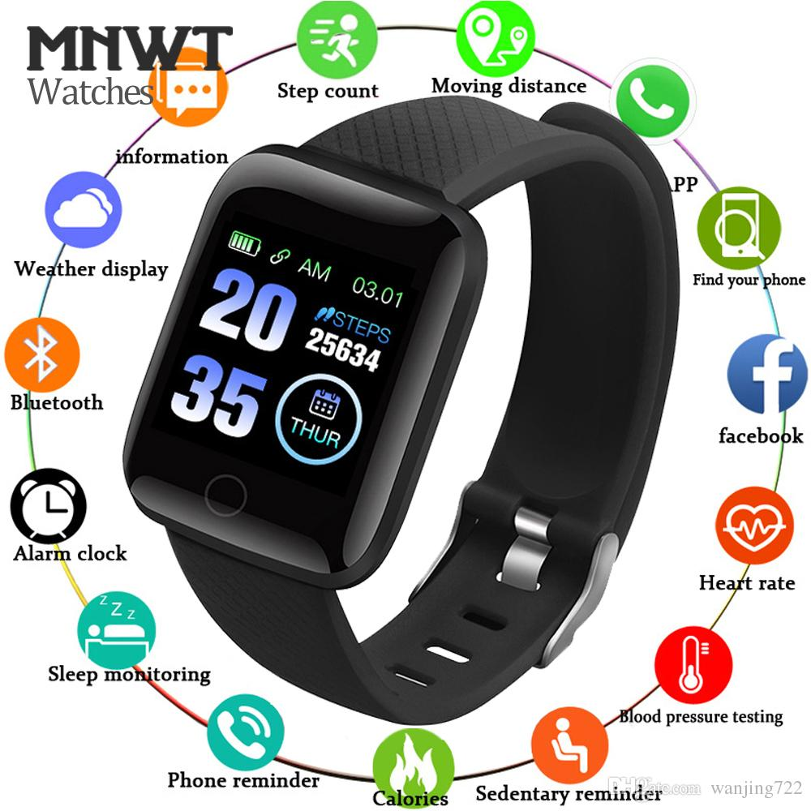

El nuevo reloj de Oppo es un clon del Apple Watch con WearOS de Google
El sistema operativo de Google.
https://comercioe21.blogspot.com/2020/08/IRVIN-BARILLAS.html
https://comercioe20.blogspot.com/2020/08/master-ANGIELUclock.html
https://alexvame.blogspot.com/2020/08/master-clockALEXVASQUEZ.html
https://darevalo00.blogspot.com/2020/08/relojes-para-toda-DAVIDAREVALO.html